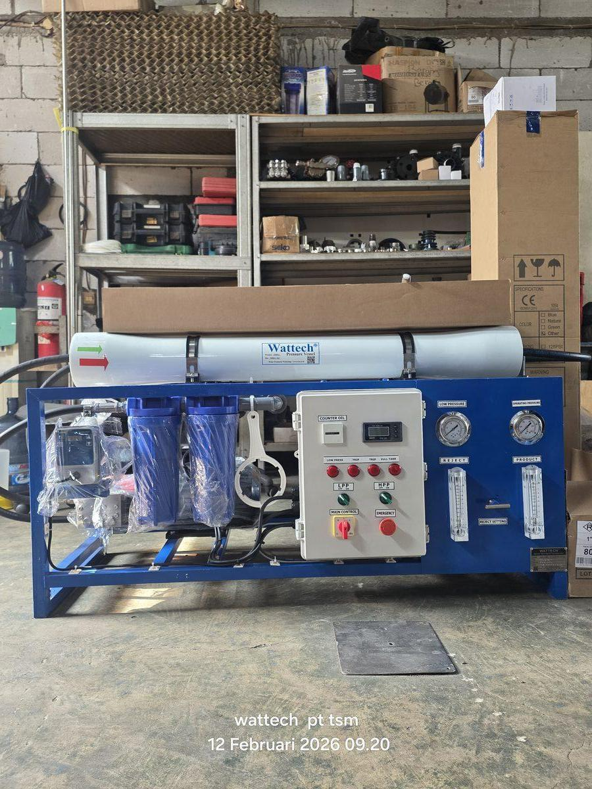

Industri farmasi Indonesia adalah sektor dengan persyaratan kualitas air paling ketat. Air bukan utilitas biasa — ia adalah bahan baku, media steril, dan komponen produk yang langsung mempengaruhi keamanan pasien. Kegagalan sistem air dapat berakibat batch reject, recall produk, hingga sanksi BPOM yang menghentikan produksi sepenuhnya.
Artikel ini menjelaskan secara lengkap standar air farmasi yang berlaku di Indonesia: pedoman CPOB BPOM 2018, kategori air farmasi, mengapa kombinasi RO+EDI menjadi standar emas modern, persyaratan loop distribusi sanitary, dan proses validasi 3 fase yang harus dilewati sebelum sistem dapat dirilis untuk produksi komersial.
Regulasi Air Farmasi di Indonesia
Regulator industri farmasi di Indonesia adalah Badan Pengawas Obat dan Makanan (BPOM), yang menerbitkan Pedoman CPOB (Cara Pembuatan Obat yang Baik) 2018. Pedoman ini mengadopsi standar global dengan referensi ke:
- USP <1231> — United States Pharmacopeia, dengan revisi 2017 yang mengizinkan RO+UF tervalidasi untuk WFI
- Ph.Eur (European Pharmacopoeia) — Standar Eropa yang umum diadopsi pabrik farmasi multinasional
- JP (Japanese Pharmacopoeia) — Untuk pabrik yang melayani pasar Jepang dan Asia Pasifik
- ASME BPE — Bioprocess Equipment Standard untuk material dan konstruksi sistem
Untuk pabrik farmasi yang dioperasikan oleh perusahaan multinasional, sering ada persyaratan tambahan dari FDA (jika ekspor ke US) atau WHO PQ (untuk vaksin dan obat WHO Essential). Sistem yang dirancang sesuai pedoman CPOB BPOM umumnya memenuhi persyaratan global ini juga.
Kategori Air Farmasi dan Spesifikasinya
Pedoman CPOB membagi air dalam beberapa kategori dengan persyaratan berbeda:
| Kategori | Konduktivitas Maks (25°C) | TOC Maks | Endotoksin | Mikroba Maks |
|---|---|---|---|---|
| Drinking Water | — | — | — | (Permenkes 492/2010) |
| Purified Water (PW) | 1,3 µS/cm | 500 ppb | Tidak wajib | 100 CFU/mL |
| Highly Purified Water | 1,3 µS/cm | 500 ppb | 0,25 EU/mL | 10 CFU/100 mL |
| Water for Injection (WFI) | 1,3 µS/cm | 500 ppb | 0,25 EU/mL | 10 CFU/100 mL |
| Pure Steam (kondensat) | 1,3 µS/cm | 500 ppb | 0,25 EU/mL | — |
Selain spesifikasi kimia di atas, ada parameter action level dan alert level yang lebih ketat dari spesifikasi compendia. Action level adalah threshold di mana investigasi dan tindakan korektif harus dilakukan, biasanya 50–80% dari spesifikasi. Alert level adalah trigger untuk monitoring lebih intensif, biasanya 30–50% dari spesifikasi. Sistem yang dirancang baik mempertahankan kualitas jauh di bawah alert level.
Mengapa RO + EDI Menjadi Standar Emas Modern?
Hingga 1990-an, demineralisasi konvensional (Cation-Anion-Mixed Bed dengan resin yang diregenerasi HCl/NaOH) adalah standar industri farmasi untuk Purified Water. Sejak 2000-an, kombinasi RO + EDI (Electrodeionization) mengambil alih sebagai standar emas — dan untuk alasan yang kuat:
Keunggulan RO + EDI vs Demineralisasi Konvensional
- Tidak butuh kimia regenerasi — EDI menggunakan resin yang terus diregenerasi secara elektrik. Tidak ada storage HCl, H₂SO₄, atau NaOH yang berbahaya. Tidak ada handling kimia yang membahayakan operator. Tidak ada limbah regenerasi yang harus dinetralisasi.
- Output kontinu — Tidak ada siklus regenerasi yang menghentikan produksi. Demineralisasi konvensional butuh regenerasi 2–4 jam setiap 8–24 jam — siklus yang menyulitkan operasi 24/7.
- Konsumsi energi rendah — EDI hanya butuh 0,1–0,2 kWh/m³ listrik DC. Bandingkan dengan distilasi multi-effect yang butuh 50+ kWh/m³.
- Output stabil dan konsisten — Resistivitas EDI konsisten 16–18 MΩ·cm tanpa "regeneration overshoot" yang umum di Mixed Bed.
- Footprint kompak — Modul EDI 5 m³/jam berukuran sekitar 1×0,5×1,8 m, jauh lebih kecil dari kolom resin setara.
Konfigurasi Standar RO+EDI untuk PW
Konfigurasi yang umum diadopsi pabrik farmasi Indonesia:
- Pre-treatment — Multi-media filter, karbon aktif (untuk dechlorination), softener (untuk hardness control)
- Cartridge filter 5 µm sebagai protection sebelum RO
- RO Pass 1 — Membran BW Dow Filmtec atau Toray, recovery 75%, tekanan 12–15 bar
- RO Pass 2 (opsional) — Untuk meningkatkan rejection lebih lanjut sebelum EDI
- EDI Module — Suez E-Cell atau Evoqua Ionpure, output konduktivitas <0,1 µS/cm
- UV 254 nm di outlet untuk disinfeksi
- Loop distribusi sanitary dengan sirkulasi kontinu (akan dibahas di bawah)
Untuk gambaran sistem ini diimplementasikan, lihat solusi demineralisasi dan EDI dari TSM yang sudah diadopsi fasilitas farmasi bersertifikat CPOB.
Memproduksi Water for Injection (WFI)
WFI adalah kategori air paling murni yang digunakan untuk produk parenteral (injeksi, infus) dan biologi. Persyaratan kunci yang membedakan WFI dari PW: endotoksin <0,25 EU/mL. Endotoksin (lipopolisakarida dari dinding sel bakteri Gram-negatif) dapat menyebabkan demam dan reaksi inflamasi serius pada pasien meskipun bakteri sudah mati.
Dua Pendekatan Produksi WFI
1. Distilasi (tradisional): Air dipanaskan menjadi uap, lalu dikondensasikan kembali. Distilator multi-effect (ME) atau Vapor Compression (VC) adalah pilihan standar. Distilasi sangat efektif menghilangkan endotoksin yang non-volatile. Kelemahan: konsumsi energi sangat tinggi.
2. RO + UF tervalidasi (modern, sejak USP 2017): Kombinasi RO 2-pass + UF dengan dosis design dapat menghilangkan endotoksin secara efektif. Lebih hemat energi, tapi membutuhkan validasi yang lebih ketat untuk membuktikan endotoxin removal yang konsisten.
Di Indonesia, mayoritas produsen WFI tetap memilih distilasi karena: (1) regulator BPOM lebih familiar dengan distilasi, (2) historical track record yang panjang, (3) "fail-safe" untuk endotoksin tanpa perlu validasi membran komplex, dan (4) masih menjadi metode preferensi farmakope global.
Loop Distribusi Sanitary: Yang Sering Diabaikan
Pengalaman TSM menunjukkan: 50% kegagalan sistem air farmasi terjadi di loop distribusi, bukan di sistem produksi. Loop distribusi yang dirancang salah dapat mengontaminasi air berkualitas farmakope dalam hitungan jam. Persyaratan kunci loop distribusi sanitary:
Material dan Konstruksi
- Pipa SS-316L electropolished dengan kekasaran permukaan (Ra) <0,5 µm — permukaan kasar adalah tempat ideal biofilm tumbuh
- Welding orbital tervalidasi — setiap weld point auto-orbital, tidak boleh stick weld manual; setiap weld point didokumentasikan dengan video atau foto
- Sanitary tri-clamp fitting — bukan threaded; pengganti gasket yang reguler dan dapat di-inspect visual
- Slope kontinu untuk drainability — loop harus dapat dikuras 100% saat sanitasi tanpa titik genangan
Operasional Loop
- Velocity 1–2 m/s kontinu — air harus terus mengalir untuk mencegah biofilm; velocity terlalu tinggi menyebabkan erosi material
- Dead-leg <6D — panjang dead-leg (cabang pipa tertutup, instrument port) tidak melebihi 6× diameter pipa
- Sanitasi rutin — air panas 80–85°C atau Pure Steam minimum mingguan, atau ozonasi kontinu untuk PW (ozon di-degradasi UV sebelum point of use)
- Sampling rutin — di setiap user point sesuai sampling plan validasi
Proses Validasi 3 Fase BPOM
BPOM mensyaratkan validasi 3 fase sebelum sistem air dapat dirilis untuk produksi komersial. Total waktu validasi minimum adalah 2–3 bulan plus monitoring 12 bulan:
Fase 1 (2–4 minggu): Baseline
Sampling harian intensif di setiap user point untuk menetapkan baseline kualitas air. Selama fase ini, air dari sistem belum boleh digunakan untuk produksi. Tujuan: membuktikan sistem dapat menghasilkan kualitas yang spesifikasi sejak awal.
Fase 2 (2–4 minggu): SOP Validation
Validasi SOP operasi: sanitasi rutin, penggantian filter, kalibrasi instrumen. Membuktikan bahwa sistem stabil di bawah variasi kondisi operasi normal — termasuk di hari kerja dengan beban penuh dan saat shutdown weekend.
Fase 3 (12 bulan): Long-Term Monitoring
Monitoring berkelanjutan dengan frequency menurun (harian → mingguan → bulanan). Membuktikan stabilitas kualitas lintas variasi musiman, beban produksi, dan kondisi air baku. Selama fase ini, air dapat digunakan untuk produksi komersial dengan kondisi monitoring tetap ketat.
Dokumen Validasi yang Harus Disiapkan
Selain protokol fase 1-2-3, dokumen validasi yang harus tersedia:
- URS (User Requirement Specification) — apa yang dibutuhkan klien
- FS (Functional Specification) — bagaimana sistem akan memenuhi URS
- DQ (Design Qualification) — desain memenuhi FS
- IQ (Installation Qualification) — instalasi sesuai desain dengan material certificate
- OQ (Operational Qualification) — sistem berfungsi di semua mode operasi
- PQ (Performance Qualification) — sistem konsisten menghasilkan kualitas (= validasi 3 fase)
Kesalahan yang Sering Terjadi
Berdasarkan pengalaman TSM melayani fasilitas farmasi Indonesia, berikut kesalahan yang paling sering terjadi:
- Underestimating loop distribusi — Banyak proyek mengalokasikan 60-70% budget untuk sistem produksi (RO+EDI) dan hanya 30% untuk loop. Realitas: loop yang baik harus 40-50% dari total karena ini adalah titik kritis kontaminasi.
- Welding tidak orbital — Demi penghematan, beberapa kontraktor menggunakan stick weld manual untuk loop. Hampir pasti gagal di audit BPOM karena kekasaran permukaan dalam pipa.
- Dead-leg yang terlewat — Instrumentasi yang dipasang dengan cabang >6D adalah dead-leg yang akan menjadi sumber kontaminasi. Sering terlewat di P&ID review jika engineer tidak detail.
- Tidak ada redundansi monitoring — Conductivity dan TOC analyzer adalah instrumen kritis. Tanpa redundansi, satu instrumen rusak menyebabkan production hold sampai diperbaiki.
- Validasi terlambat — Beberapa pabrik memulai validasi setelah commissioning selesai, baru menemukan masalah desain yang tidak dapat diperbaiki tanpa modifikasi besar. Validasi harus dimulai dari URS.